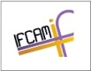

---
---

<div id="wrap">

<div id="header"><br>
<table><tr><td>
</td><td></td>
</tr></table>

</div>

<div id="menu">
<ul>
<li><a href="ifcam.html">Home</a></li>
<li><a href="committee.html">Scientific Committee</a></li>
<li><a href="sponsors.html">Sponsors</a></li>
<li><a href="project.html">Joint Research Project</a></li>
<li><a href="school.html">Summer School</a></li>
<li><a href="visitors.html">Visitors Programme</a></li>
<li><a href="workshop.html">Workshop</a></li>
<li><a href="contact.html">Contact</a></li>

</ul>
</div>

<div id="content">
<div class="left"> 

<h2><a href="#">INDO-FRENCH CENTRE FOR APPLIED MATHEMATICS (IFCAM)</a></h2>
<p>The Indo-French Centre for Applied Mathematics (IFCAM) has been jointly set up by the Indian and French Governments at the Indian Institute of Science, Bangaloreas an international joint research unit (UMI). IFCAM is designed as a platform for cooperation in mathematical sciences with the primary focus being the area of applied mathematics.</p> 	 
<br />
<p>IFCAM funds joint research projects between Indian and French investigators, exchange visits of faculty and students (within the ambit of a research collaboration), exploratory visits, post-doctoral fellowships, joint research workshops, annual summer/winter school, and visits by Indian researchers (particularly from universities and colleges) to IFCAM.</p><br />

<p><b>Director:</b> <a href="http://math.iisc.ernet.in/~rangaraj/">Prof. Govindan Rangarajan,</a> Indian Institute of Science, India.<p><br>

<p><b>Deputy Director:</b> Prof. Jean-Pierre Raymond, Universite Paul Sabatier, France.</p><br>

<p><b>Financial Management:</b> <a href="http://www.cefipra.org/">Indo-French Centre for the Promotion of Advanced Research (CEFIPRA),</a> India</p> 	 
<br />
</div>

<div class="right"> 

<!--<h2>Quick Links :</h2>
<ul>
<li><a href="#">World Politics</a></li> 
<li><a href="#">Europe Sport</a></li> 
<li><a href="#">Networking</a></li> 
<li><a href="#">Nature - Africa</a></li>
<li><a href="#">SuperCool</a></li> 
<li><a href="#">Last Category</a></li>
</ul>-->

<!--<h2>Archives</h2>
<ul>
<li><a href="#">January 2007</a></li> 
<li><a href="#">February 2007</a></li> 
<li><a href="#">March 2007</a></li> 
<li><a href="#">April 2007</a></li>
<li><a href="#">May 2007</a></li> 
<li><a href="#">June 2007</a></li> 
<li><a href="#">July 2007</a></li> 
<li><a href="#">August 2007</a></li> 
<li><a href="#">September 2007</a></li>
<li><a href="#">October 2007</a></li>
<li><a href="#">November 2007</a></li>
<li><a href="#">December 2007</a></li>
</ul>-->

</div>

<div style="clear: both;"> </div>

</div><br><br><br><br><br><br>

<div id="footer">
Copyright@2013</div>

</div>

